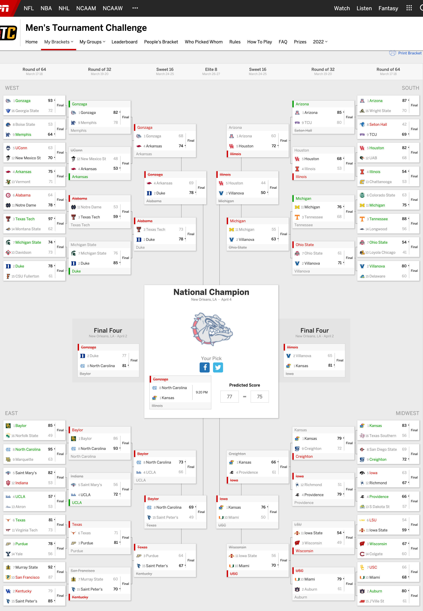
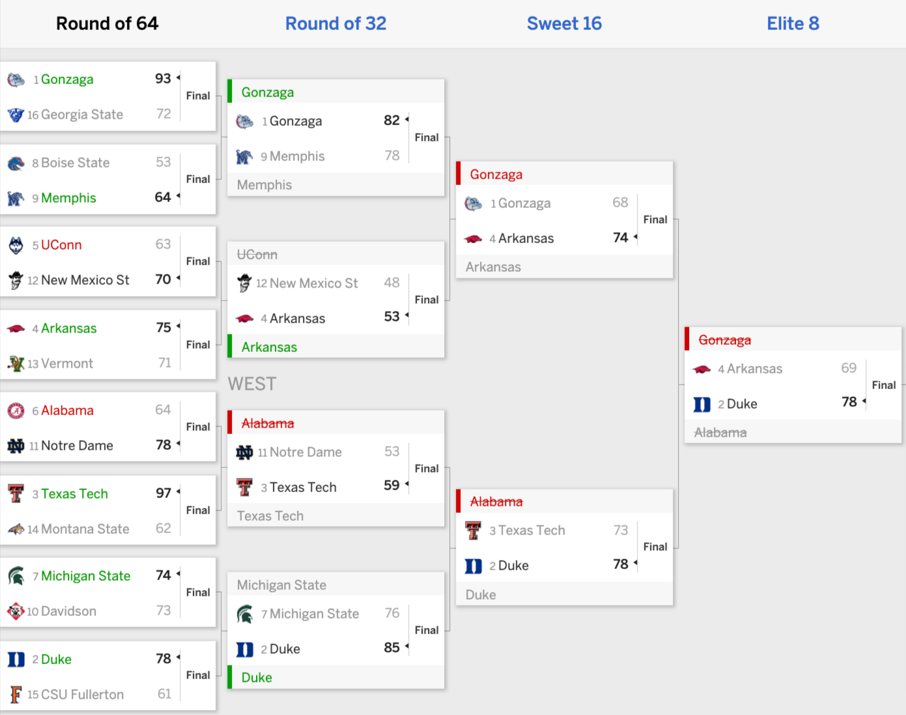
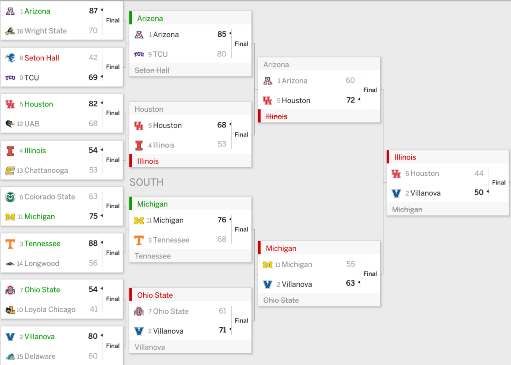
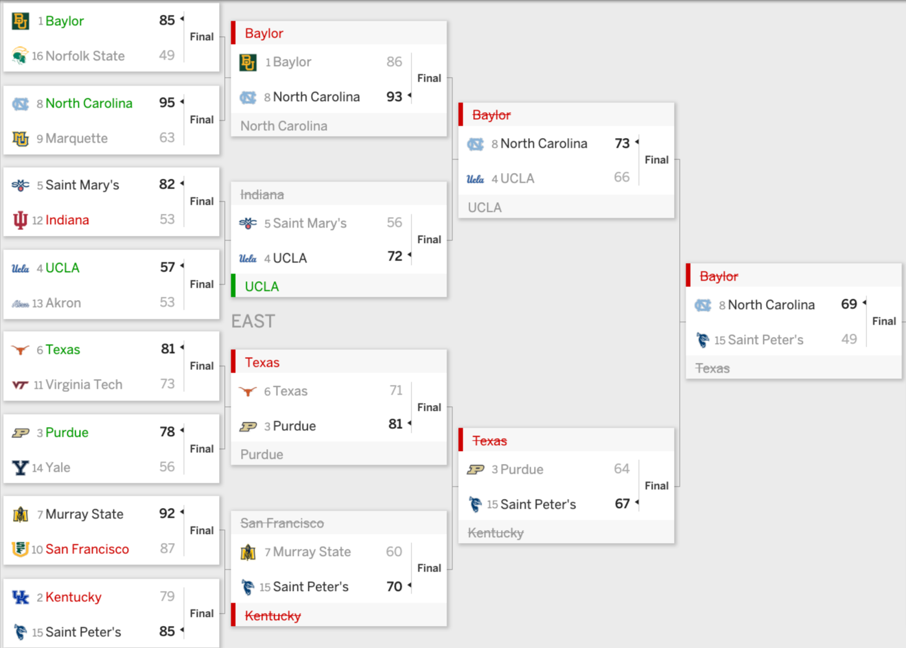
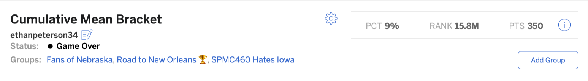

This spring, our SPMC 460 class was tasked with creating a machine learning model to predict the outcome of the Men’s March Madness tournament. We had multiple options of models to choose from: logistic regression, random forest, XGBoost, and support vector machines. I elected to go with a support vector machine (SVM), simply because it seemed like it would work the best for me.
## Setting default kernel parameters
## line search fails -1.135902 -0.004858116 4.541961e-05 -2.944535e-09 -5.253353e-09 -3.171963e-11 -2.386051e-13Part of creating the learning model is using self-picked predictors. We could use just about any statistic in basketball that we could find. We used data from hoopR’s library of team box scores and kenpom. The predictors I decided upon are below:
| My Predictors | |
|---|---|
| The "thought-to-be perfect" predictors. | |
| variable | role |
| team_cm_points_per_possession | predictor |
| team_cm_true_shooting_percentage | predictor |
| team_cm_free_throw_rate | predictor |
| team_cm_orb_percentage | predictor |
| team_cm_steal_turnover_ratio | predictor |
| team_cm_offensive_efficiency | predictor |
| team_cm_defensive_efficiency | predictor |
| team_srs | predictor |
| opponent_cm_points_per_possession | predictor |
| opponent_cm_true_shooting_percentage | predictor |
| opponent_cm_free_throw_rate | predictor |
| opponent_cm_orb_percentage | predictor |
| opponent_cm_steal_turnover_ratio | predictor |
| opponent_cm_offensive_efficiency | predictor |
| opponent_cm_defensive_efficiency | predictor |
| opponent_srs | predictor |
| TeamResult | outcome |
| By: Ethan Peterson | |
Used against my testing data from games dating back to 2015, my model ran a 74% testing accuracy. I naively believed that these would be great predictors that would result in a good outcome for my bracket (hindsight is 20/20 for a reason). Boy was I wrong.
Let’s take a look at my bracket. My Final Four is completely eliminated so no need to wait for the tournament to finish.
 As you can see, this model’s predictions were pretty terrible.
It is incredibly difficult to predict a tournament of this size. my first model did rather well in the Big Ten tournament, as it predicted Iowa to beat Purdue in the Big Ten Championship game (which happened). But this was a different story. The levels of competition are much more varied, and it is March Madness. Crazy stuff happens.
My biggest miss was my entire Final Four. Iowa and Illinois specifically. The B1G performed terribly this tournament, with no teams making the Elite 8. My model seemed to heavily favor Big Ten teams. Three B1G teams in the Elite 8, with two moving on to the Final Four and one in the Championship.
Let’s take a look at each regional bracket and where it went wrong. Firstly, the West regional:  I performed rather well in the R64, only missing New Mexico State’s upset against UConn and Alabama losing to Notre Dame. NMSU’s upset wasn’t brutal to my bracket, as UConn was slated to lose next round. But Alabama losing really crushed my West regional, as I had them facing Gonzaga in the Elite 8. Speaking of Gonzaga, they were my model’s national champion. But, as we all know, Arkansas blew up that dream, and we’re left 0/2 on the West regional Elite 8, with Arkansas and Duke reaching it instead.
 My South bracket was almost more important and critical for the model’s success as I needed 4-seed Illinois to reach not only the Final Four, but the championship game vs. Gonzaga. That didn’t happen, as Illinois was “upset” by Houston in the R32. I also needed Michigan to reach the Elite 8 as well, but got beat by Villanova in the Sweet 16. I’m not sure what my model saw in both Illinoi and Michigan, but, once again, I ended up 0/2 in the Elite 8 out of the South regional.
 I can only laugh off the outcome of the East regional. My model’s biggest mishap was Baylor reaching the Final Four, only for them to be upset by now-champion UNC in the R32. My model didn’t predict (or perhaps even consider the possibility of) Saint Peter’s heroic upset on Kentucky and subsequent run to the Elite 8. That’s part of the magic and madness that is March Madness. I had Texas also reaching the Elite 8 facing Baylor, but they were upset by Purdue in the R32. Again, 0/2 in the Elite 8 for the East regional.
Midwest Bracket
This was the bracket that ultimately ruined my March Madness experience. 5-seed Iowa was upset by 12-seed Richmond in the R64, and Iowa was my model’s Final Four pick. My model also saw something in USC. Having them upset 2-seed Auburn and 3-seed Wisconsin later on down the road. Alas, they themselves were upset by 10-seed Miami in the R64. Ergo, no Iowa-USC matchup, meaning my model went a perfect 4/4 on going 0/2 on Elite 8 matchups.
In the end, my model didn’t do great compared to the rest of the world’s brackets (see below).
 See that “Game Over” status? They could have put that there after the Round of 32. I didn’t garner a single point once the Sweet 16 started. A whopping 9% success rate compared to my 74% test result accuracy is preposterously bad. How can I improve upon this?
I’m sure I wouldn’t have to do much to have better success. I believe ORB%, DRB%, and free throw rate were okay factors, but I they might have been too marginal. Perhaps I should go more basic and broad, like a logistic regression looking at just field goal percentage and opponent field goal percentage. Maybe that would’ve been better.
There’s a ton of different routes I could go. But I’m excited for next year, because I am definitely going to do this again.